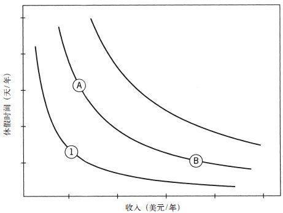

第27章 禀赋效应与市场交易

图11
(禀赋效应是指当个人一旦拥有某个物品，那么他对该物品价值的评价要比未拥有之前大大提高。—译者注)
即使没学过经济学的课程，你可能也看到过图11或与之类似的图形。这个图形展示了面对两种好处（收入和休假时间）时，不同的人表现出的“无差异曲线图”。
在经济学入门课程中，学生们会了解到：图中每一个点都代表了收入与休假天数的特殊结合。每条“无差异曲线”都与两种情况的结合相关联，收入和休假都是大家想要的，都有同样的效用。如果人们不管自己有多少收入、有多少休假时间，只想以同样的价格“出卖”休假时间以换取更多收入的话，这些曲线就会变成平行的直线了。凸出的部分表明边际效用递减，即你的休假天数越多，就越不会在意自己是否还想多休息一天，而且每多一天，这一天的意义就比前一天更小。同样，你的收入越高，就越不关心自己是否会额外再得到一美元，而且为换取一天的额外休假，你愿意放弃的钱数也会有所增加。
每条“无差异曲线”上所有的位置都同样吸引人，这也正是“无差异”三个字的真实体现：你并不在意自己到底处在“无差异曲线”上的哪个位置。所以，如果A和B都在你的无差异曲线上，你对它们的位置并不在意，而且也不需要刻意在两点之间来回移动。在过去100年里出版的所有经济学教科书中都曾出现过这个图的不同版本，数百万学生都曾仔细研究过这个曲线图，却很少有人注意到图中缺失了什么。理论模式的影响和简洁再一次蒙蔽了这些学生和学者，使得他们没有看到这个曲线图的严重缺陷。
图中缺失的是对个人当前收入和休假天数的标示。如果你是个雇员，劳动待遇便说明了你应得的薪水和休假日，这在图中也有对应的点。这个点就是你的参照点、你的现状，但图中并没有显示这个点。画这个图的那些理论家没能展示出这一点，所以你便相信参照点并不重要，但现在你知道参照点是很重要的。这又是一个不折不扣的伯努利式错误。无差异曲线的表现含蓄地给出了假设，即所有时间点的效用完全是由当前的情况决定的，与过往毫不相干，而且你对一项可能的工作的评估并不依赖于自己当前的工作待遇。在这种情形以及其他许多情形下，这些假设完全是不切实际的。
忽略无差异曲线图中的参照点这一做法正好印证了由理论导致的盲目性，堪称一个令人惊讶的案例，因为我们常碰到一些参照点非常重要的案例。在劳资谈判中，双方都清楚其参照点是现行合同，而且谈判关注的是就参照点作出让步时双方的共同要求是什么。在讨价还价时，损失厌恶的作用也很容易理解：作出让步让人很痛心。
你对参照点的作用肯定有很深刻的亲身感受。如果你曾换过工作或职位，哪怕是曾想过要换一换，你就会以自己现在的情况作为参照点，看看新的工作和职位的特点是更好了还是更差了。你也许还会注意到，在评估中不利之处比有利之处更加突出，这说明损失厌恶发生了作用。人们很难接受比原来还糟糕的改变。例如，想要得到新工作的失业人员能接受的最低工资平均来看是其之前工作的90%，在一年的时间内下降不到10%。
为了弄明白参照点对选择的影响，请看艾伯特和本这两位的例子，他们是“快乐双胞胎”，有相同的品位，第一份工作也是一样的，这份工作工资低、假期短。他们当前的状况和图11中点1的情况相同。公司给他们提供了两个更好的位置A和B，并让他们自己选择谁要1万美元的加薪（位置A），谁要每月带薪休假一天的机会（位置B）。由于他们两人对这两种选择都无所谓，便用抛硬币的方式来决定。于是艾伯特获得了加薪机会，而本则得到了额外的每月一天带薪假期。一段时间过后，这对双胞胎习惯了各自的位置。现在公司告诉他们，如果他们愿意，可以互换位置。
图11中体现的标准理论给出的假设为：人们的选择偏好很稳定，不会随时间推移发生改变。位置A和B对这对双胞胎来说具有相同的吸引力，而且他们几乎没有或者根本就不会产生想要改变的想法。前景理论的断言则截然相反，该理论认为两人肯定会留在自己当前位置上的原因是他们想规避损失。
现在让我们来看看艾伯特。他刚开始在图中的位置1，在那个参照点上，他发现了两个同样吸引人的选择：
选择A：加薪1万美元
或者
选择B：得到12天的额外假期
选择位置A改变了艾伯特的参照点，当他想要换到位置B时，他又有了新的选择：
停留在A点上：无所得也不损失
或者换到B点：获得12天的额外假期，少赚1万美元
你刚刚对损失厌恶有过主观体验，能感受到：少赚1万美元是个非常糟糕的消息。即使获得12天额外假期和得到1万美元同样令人惊喜，多出来的假期也不足以补偿损失的1万美元。艾伯特之所以会留在A点上是因为移动的不利之处大于有利之处。对本来说同样如此，他也想保住自己当前的职位，因为失去眼前这宝贵的假期比损失额外的收入更划不来。
这个例子凸显了“无差异曲线”的标准模式没有预见到的选择的两个方面。第一，人们的偏好并不是一成不变的，它们会随着参照点发生变化。第二，改变的不利之处比有利之处更突出，其有利之处包括对倾向于现状的偏见。当然，损失厌恶并不是说你从未想过要改变自己的处境；一次机会带来的益处也许会超过甚至大大超过损失。损失厌恶只能表明我们的选择总是强烈偏向趋近参照情形的选项（而且通常情况下会偏向较小而不是较大的改变）。
传统的无差异曲线和伯努利用财富状态来表示结果的做法有一个共同的错误假设，即拟定各项事务状态的效用只依赖于该状态本身，并不受你过往的影响。对这一错误的修正已经成为行为经济学的成就之一。